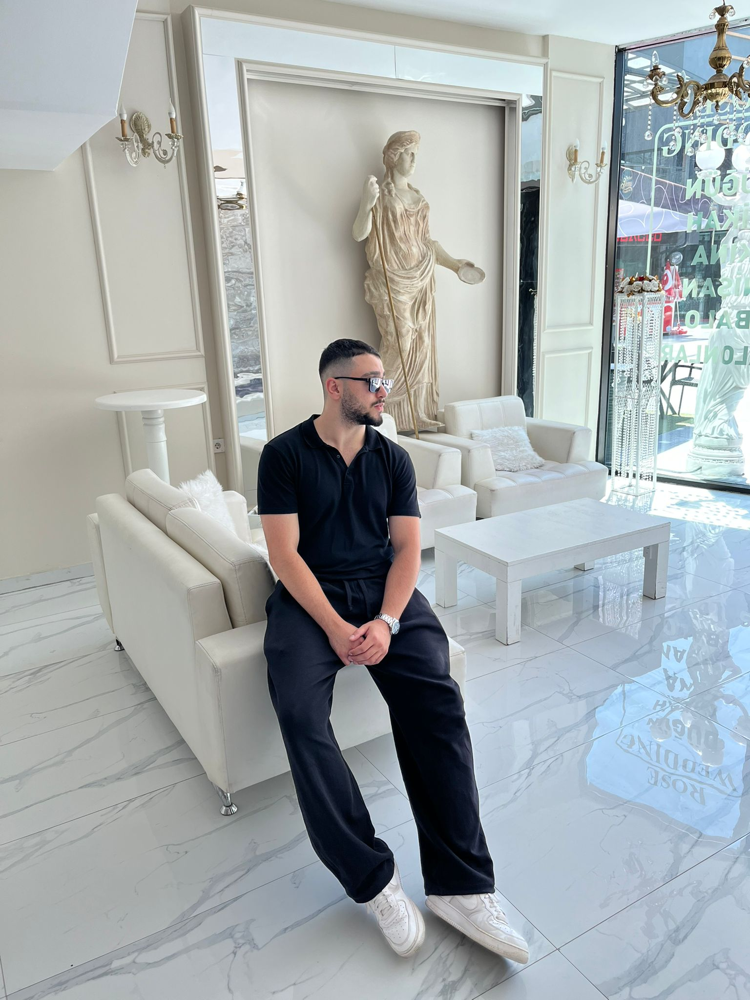

Merhaba, ben Arda Karadağ
Ankara doğumluyum, Ostim Teknik Üniversitesi Bilgisayar Programcılığı öğrencisiyim. Yapay zeka, veri bilimi, veri tabanı sistemleri ve full stack web geliştirme alanlarında kendimi geliştiriyorum. Web tasarımı ve insan-bilgisayar etkileşimine özel ilgi duyuyorum.
“Kod yazmak bir meslek değil, bir zihin dili.”
Daha fazlası için yukarıdaki menüden bölümleri inceleyebilirsiniz.